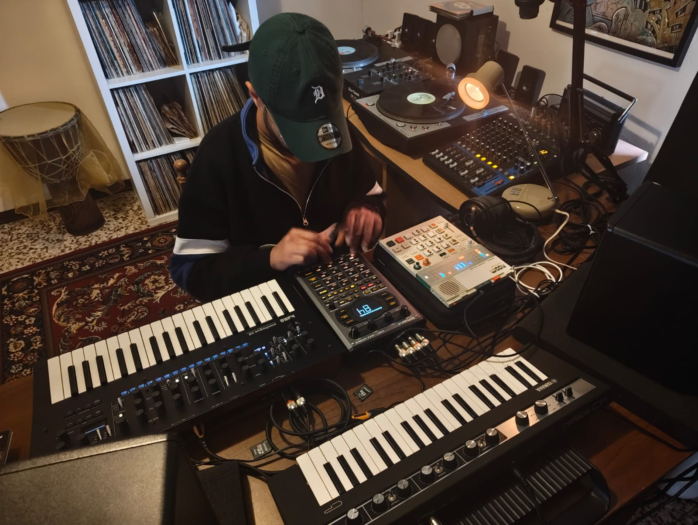
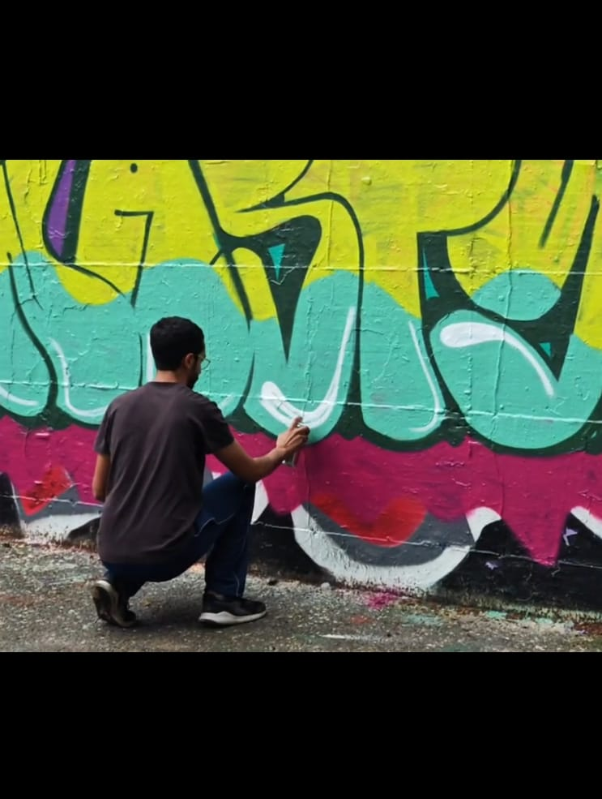

Parola D’ordine
Questa rotta è riservata alla ciurma.
Vuoi salire a bordo?
Lascia la tua email. Il capitano potrebbe ricontattarti.
1 / 3
Impossibile caricare il mix. Riprova.
L'atto di disobbedienza, in quanto atto di libertà, è l'inizio della ragione.
Questa rotta è riservata alla ciurma.
Lascia la tua email. Il capitano potrebbe ricontattarti.
 Beat Tape 1
Beats onesti e un pò di cremeria dalle fattorie. Realizzati interamente su sp404MKII
Beat Tape 1
Beats onesti e un pò di cremeria dalle fattorie. Realizzati interamente su sp404MKII
 Beat Tape 2
Beats biologici realizzati grazie allo spirito di Mario Più. Realizzati interamente su sp404MKII
Beat Tape 2
Beats biologici realizzati grazie allo spirito di Mario Più. Realizzati interamente su sp404MKII
 Random Jamz
Texture campionate e elementi elettronici per le random più cose
Random Jamz
Texture campionate e elementi elettronici per le random più cose
Uno spazio da sviluppare.
Uno spazio da sviluppare.
Il territorio, da vicino
Cultura X Contro è un progetto apolitico, apartitico e areligioso.
Mette al centro le persone, la responsabilità e la comunità reale, contro le logiche istituzionali che spengono il pensiero, addomesticano la cultura e trasformano le relazioni in pubblico passivo.
La cultura non è decoro, non è ornamento, non è consumo passivo.
È presa di posizione, esercizio critico, conflitto con l'ovvio.
Essere contro non significa opporsi per riflesso.
Significa rifiutare ciò che appiattisce, semplifica, addomestica.
È separare senza chiedere scusa.
Il gusto è disciplina dello sguardo, sensibilità e capacità di selezione.
Ogni stile autentico è una sintesi di necessità e misura.
È coerenza tra forma e visione nella precisione del gesto.
Da qui in poi si aggiungeranno nel tempo.
Un approfondimento sull’hip hop come movimento culturale multidisciplinare, analizzandone le origini, il contesto sociale e il ruolo come strumento di espressione e identità.
Un focus sulla club culture, a partire dalla nascita di house e techno come spazi di aggregazione, sperimentazione musicale e libertà espressiva, fino alle loro evoluzioni contemporanee.
Un evento dedicato alla cultura dei sound system, intesa come pratica collettiva, sonora e politica, capace di creare comunità temporanee attraverso il suono.
Un evento dedicato alla cultura del writing come forma di espressione urbana, linguaggio visivo e pratica identitaria, analizzata nel suo contesto storico e nel suo impatto culturale.
Un focus sulla cultura dello skateboarding come pratica urbana e comunitaria, espressione di autonomia, stile di vita e appropriazione dello spazio pubblico.
Cultura X Contro
Spazio libero in cui celebrare la vita
TBA
Richiesta partecipazione attiva
Questa rotta è riservata alla ciurma.
Lascia la tua email. Il capitano potrebbe ricontattarti.


In giro dicono che sia un tipo imprevedibile.
E' inoltre il fondatore di Cultura Contro, un progetto nato dalla convinzione che, in un'epoca dominata dal consumo rapido dei contenuti, sia necessario andare controcorrente e restituire alla cultura il suo ruolo più autentico per stimolare il pensiero critico e generare nuove forme di incontro e dialogo.
"Un buon viaggiatore non ha piani precisi e il suo scopo non è arrivare."
Lao Tzu